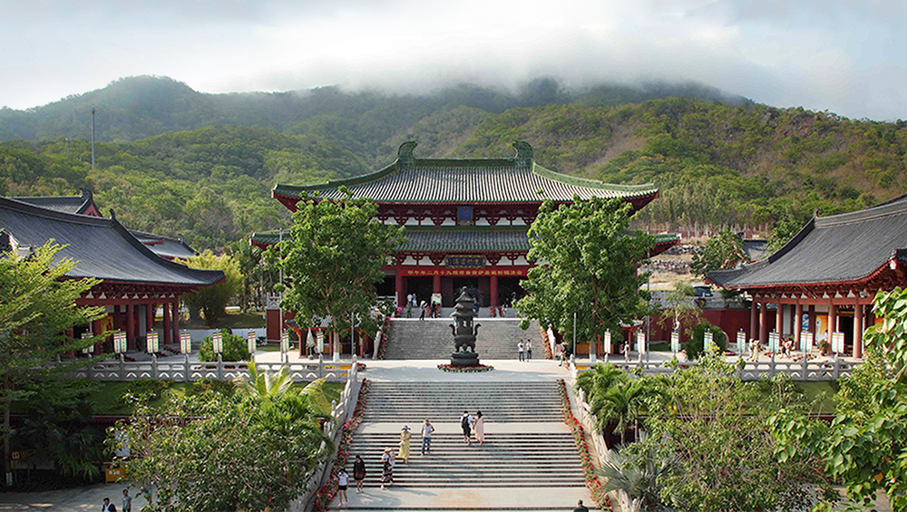
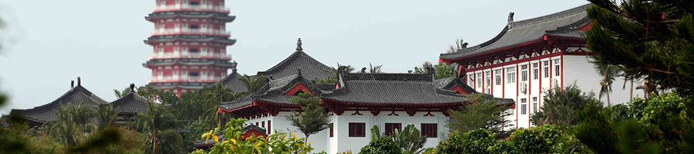

海南三亚南山文化旅游区 国家首批AAAAA风景旅游区
English

景区概况
网上预定
景区服务
南山文化
新闻动态
温馨小提示：关注南山微信平台“海南南山文化旅游”，优享南山缘起楼素斋8.8折优惠。
首页
客房预定
南山服务
南山文化
法训
婚纱摄影
选择南山休闲会馆，您可以在大海、阳光、沙滩的胜景中，感受自然、怀乡、涅磐的圣境。
为了让大家更好地游览整个景区，我们提供了南山美食、酒店住宿、园内交通等等细致入微的服务项目。
南山景区的主要特色文化分为：佛教文化、生态文化、福寿文化
6月2日是农历五月初五，一场“喜迎端午，体验民俗”活动在海南三亚南山佛教文化苑举行，市民和游客免费参加画额抹雄黄、挂心愿牌、品尝素粽、祈福、放生等活动，体验端午节的传统习俗。
或许你曾无数次的幻想过自己的婚礼，奢华的，简单的，深蓝色的，桃粉色的，宾客满座的，简单质朴的。或许你曾无比期待过自己婚纱照在何地拍摄，大海边、草地上、小木屋旁......南山可以满足您全部的幻想，留下一生难忘的回忆。

海天丛林，南山寺，居山面海，气势恢宏，是中国近五十年来新建的最大佛教道场，也是中国南部最大的寺院
闻香识禅，悟道静修。南山国家CETTIC香道师职业认证培训火热开幕！咨询及报名请拨0898-88837879
梵天净土，浸染南山灵气，狂心不歇，歇即菩提。 9月，种一棵菩提，结一个善缘，积善培福，发愿以证菩提心。结缘热线：0898-88837985
设为首页
|
加入收藏
|
首页
|
联系我们
|
法律法规
|
版权所有: © 2005-2015 南山旅游 版权所有，并保留所有权利。
通信地址: 海南省三亚市南山文化旅游区 邮编:572025 E-mail:nsale@qq.com
Copyright ©2014,Nanshan Cultural Tourism Commission Allright reversed.